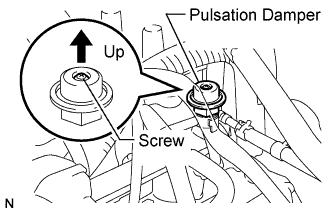

FUEL PRESSURE PULSATION DAMPER > INSTALLATION |
| 1. INSTALL FUEL PRESSURE PULSATION DAMPER ASSEMBLY |
Install 2 new gaskets and the fuel hose with the fuel pressure pulsation damper.

Tighten the fuel pressure pulsation damper by hand.
 |
Using SST, tighten the union bolt.
 |
Connect the fuel injector connector.
| 2. CONNECT NO. 2 FUEL HOSE |
 |
Connect the No. 2 fuel hose to the No. 3 fuel pipe.
| 3. INSTALL V-BANK COVER SUB-ASSEMBLY |
 |
Attach the 2 V-bank cover hooks to the bracket.
Install the V-bank cover with the 2 nuts.
| 4. CONNECT CABLE TO NEGATIVE BATTERY TERMINAL |
| 5. INSPECT FOR FUEL LEAK |
Connect the intelligent tester to the DLC3.
Turn the engine switch on (IG) and intelligent tester ON.
Enter the following menus: Powertrain / Engine and ECT / Active Test / Activate the Fuel Pump Speed Control.
Check that there are no fuel leaks after doing maintenance anywhere on the fuel system.
 |
Check that the pulsation damper screw rises up when the fuel pump operates.
If the operation is not as specified, check the following parts:
Turn the engine switch off.
Disconnect the intelligent tester from the DLC3.